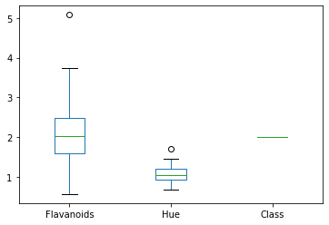
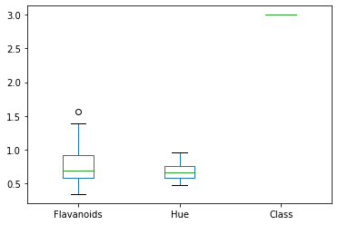
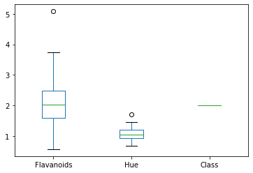
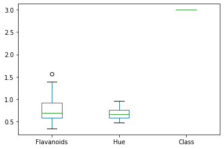

Jupyter Notebooks and Python¶
Jupyter Notebooks and Markdown¶
Jupyter notebooks have two important enviroments!
Text boxes
Coding boxes
#this is a coding box
print('Hello World')
Hello World
The text boxes support the markdown language. Think of it like html but a lot easier! You can create links, make lists, tables, include images, and you’ll probably teach me a trick in it too! Here is a great reference https://www.markdownguide.org/cheat-sheet/
I’ll do some math typesetting too. markdown supports \(\LaTeX\) encodings too with \( or \)$
Try it, I think you’ll mind markdown a great way to express yourself on the web!
Jupyter Notebooks and Python¶
Code boxes support python coding. I’ll always use python 3, 2 is legacy now and I don’t see people using it very much anymore.
Notebooks allow for the code to be run out of order so be careful about reporducibility in your code. You can move blocks in a notebook up and down over on the right! Shift + Enter executes a cell (even text!)
Style For Python¶
I’ll load my packages in their own code cell. Most things I do will be in their own code cell. Notebook environment allows you to test your code quickly, especially when writing small functions.
import numpy as np #a matrix like package for handling data
import pandas as pd #a R like package for handling data
from scipy import stats #a way to just get a piece of a large package
import matplotlib.pyplot as plt
import seaborn as sns
def f(x):
return x**2
f(-2)
4
I’ll encourage you to intersperse your code with comments about it using the text box! Here I have defined a function that is \(f(x) = x^2\). What would have happened if I had done x^2?
-2^2
-4
That’s not right! Anybody know why?
Let’s get a visualization since that is why we are here!
x = np.arange(-4,4,.1)
y = f(x)
plt.plot(x,y)
[<matplotlib.lines.Line2D at 0x7f0127f37790>]
I’ll get a statistics visualization in here too!
x = np.arange(-4,4,.1)
plt.plot(x,stats.norm.pdf(x),'c', lw=5, alpha=0.6, label='norm pdf',) #matplotlib has tons of options!
plt.legend(loc='best', frameon=False)
plt.show()
Of course this is not really a data visualization!
Data and Visualization¶
To load data, I am going to pull a csv from the web. There are tons of places you can find data but this is by far my preferred method!
df = pd.read_csv('https://archive.ics.uci.edu/ml/machine-learning-databases/wine/wine.data',header = None)
df
| 0 | 1 | 2 | 3 | 4 | 5 | 6 | 7 | 8 | 9 | 10 | 11 | 12 | 13 | |
|---|---|---|---|---|---|---|---|---|---|---|---|---|---|---|
| 0 | 1 | 14.23 | 1.71 | 2.43 | 15.6 | 127 | 2.80 | 3.06 | 0.28 | 2.29 | 5.64 | 1.04 | 3.92 | 1065 |
| 1 | 1 | 13.20 | 1.78 | 2.14 | 11.2 | 100 | 2.65 | 2.76 | 0.26 | 1.28 | 4.38 | 1.05 | 3.40 | 1050 |
| 2 | 1 | 13.16 | 2.36 | 2.67 | 18.6 | 101 | 2.80 | 3.24 | 0.30 | 2.81 | 5.68 | 1.03 | 3.17 | 1185 |
| 3 | 1 | 14.37 | 1.95 | 2.50 | 16.8 | 113 | 3.85 | 3.49 | 0.24 | 2.18 | 7.80 | 0.86 | 3.45 | 1480 |
| 4 | 1 | 13.24 | 2.59 | 2.87 | 21.0 | 118 | 2.80 | 2.69 | 0.39 | 1.82 | 4.32 | 1.04 | 2.93 | 735 |
| ... | ... | ... | ... | ... | ... | ... | ... | ... | ... | ... | ... | ... | ... | ... |
| 173 | 3 | 13.71 | 5.65 | 2.45 | 20.5 | 95 | 1.68 | 0.61 | 0.52 | 1.06 | 7.70 | 0.64 | 1.74 | 740 |
| 174 | 3 | 13.40 | 3.91 | 2.48 | 23.0 | 102 | 1.80 | 0.75 | 0.43 | 1.41 | 7.30 | 0.70 | 1.56 | 750 |
| 175 | 3 | 13.27 | 4.28 | 2.26 | 20.0 | 120 | 1.59 | 0.69 | 0.43 | 1.35 | 10.20 | 0.59 | 1.56 | 835 |
| 176 | 3 | 13.17 | 2.59 | 2.37 | 20.0 | 120 | 1.65 | 0.68 | 0.53 | 1.46 | 9.30 | 0.60 | 1.62 | 840 |
| 177 | 3 | 14.13 | 4.10 | 2.74 | 24.5 | 96 | 2.05 | 0.76 | 0.56 | 1.35 | 9.20 | 0.61 | 1.60 | 560 |
178 rows × 14 columns
There were no column names (header) on the website data file. Instead, I’ll grab those next and add them to the file.
head = ['Class','Alcohol','MalicAcid','Ash','AlcalinityAsh','Magnesium','Phenols','Flavanoids','NonflavanoidPhenols','Proanthocyanins','ColorIntensity','Hue','OD280/OD315','Proline']
#https://archive.ics.uci.edu/ml/machine-learning-databases/wine/wine.names more info on the data file than you could ever use!
df.columns = head
df.head() # only prints the first 5
| Class | Alcohol | MalicAcid | Ash | AlcalinityAsh | Magnesium | Phenols | Flavanoids | NonflavanoidPhenols | Proanthocyanins | ColorIntensity | Hue | OD280/OD315 | Proline | |
|---|---|---|---|---|---|---|---|---|---|---|---|---|---|---|
| 0 | 1 | 14.23 | 1.71 | 2.43 | 15.6 | 127 | 2.80 | 3.06 | 0.28 | 2.29 | 5.64 | 1.04 | 3.92 | 1065 |
| 1 | 1 | 13.20 | 1.78 | 2.14 | 11.2 | 100 | 2.65 | 2.76 | 0.26 | 1.28 | 4.38 | 1.05 | 3.40 | 1050 |
| 2 | 1 | 13.16 | 2.36 | 2.67 | 18.6 | 101 | 2.80 | 3.24 | 0.30 | 2.81 | 5.68 | 1.03 | 3.17 | 1185 |
| 3 | 1 | 14.37 | 1.95 | 2.50 | 16.8 | 113 | 3.85 | 3.49 | 0.24 | 2.18 | 7.80 | 0.86 | 3.45 | 1480 |
| 4 | 1 | 13.24 | 2.59 | 2.87 | 21.0 | 118 | 2.80 | 2.69 | 0.39 | 1.82 | 4.32 | 1.04 | 2.93 | 735 |
Let’s build all the intro to stats vizualizations we can! Class is the only categorical variable so
dfg = df.groupby(['Class'])['Class'].count()
dfg.plot(kind='bar', title='Classes of Wine', ylabel='Number of Classes',
xlabel='Class', figsize=(6, 5))
<matplotlib.axes._subplots.AxesSubplot at 0x7f54d37363d0>

I am not going to lie, this was much harder than I thought it would be! Let me explain what I had to do. Basically I want to count how many times ‘Class’ == 1 occurs. To do that, I created a new dataframe and grouped the classes together and asked it to count how many ‘Class’s there are. Not the sexiest process…
What are some things that could be fixed in the above graphic?
dfg.plot(kind= 'pie')
<matplotlib.axes._subplots.AxesSubplot at 0x7f54d182a410>

I think this is the only pie chart you will see this semester!
Next I’ll do some quantitaive variables.
df.Alcohol.plot(kind = 'hist')
<matplotlib.axes._subplots.AxesSubplot at 0x7f54d37113d0>

Here I call just the dataframe, the column I want and then ask it to plot. I think this is very slick! Next is a box plot we should know and love!
df.Alcohol.plot(kind = 'box')
<matplotlib.axes._subplots.AxesSubplot at 0x7f54cdf80710>

Lastly, I just looked at all the options until I saw one I thought might work…
df.Alcohol.plot(kind = 'kde')
<matplotlib.axes._subplots.AxesSubplot at 0x7f54d1816e10>
With each of these graphics, we should also be worried about the summary statistics that are represented
Graphic |
Statistic |
|---|---|
Histogram |
Mean and Standard Deviation |
Box Plot |
Five Number Summary |
df.Alcohol.mean()
13.000617977528083
df.Alcohol.std()
0.8118265380058577
df.Alcohol.describe()[3:]#I'm cheating here, this also did the mean and standard deviation...
min 11.0300
25% 12.3625
50% 13.0500
75% 13.6775
max 14.8300
Name: Alcohol, dtype: float64
df.Alcohol.quantile(q = .75)
13.6775
df.Alcohol.min()
11.03
Let’s get a little more exotic and do a side-by-side of some data.
dfg = df.groupby('Class')[['Flavanoids','Hue','Class']]
dfg.plot(kind = 'box')
plt.show()
 



I could not get these to be side-by-side, time to pull out the big guns! Seaborn is another package that was really built for visualizing data.
sns.boxplot(y='Hue', x = 'Class', data = df)
#sns.boxplot(y='Flavanoids', x = 'Class', data = df)
<matplotlib.axes._subplots.AxesSubplot at 0x7f54ccaeb610>

sns.boxplot(data = df[['Flavanoids','Hue','Class']])
<matplotlib.axes._subplots.AxesSubplot at 0x7f54ccc9d210>

I really wanted the side-by-side to have multiple data inputs. I am embarassed how long this took me but I blame my spelling of ‘colmuns’
df_melt = df.melt(id_vars = 'Class',
value_vars = ['Flavanoids','Hue'],
var_name = 'colmuns')
sns.boxplot(x = 'colmuns',y='value',hue = 'Class',data = df_melt)
<matplotlib.axes._subplots.AxesSubplot at 0x7f54cc5eae10>

The melt command is very powerful and does some nifty things to large datasets quickly!
df_melt
| Class | colmuns | value | |
|---|---|---|---|
| 0 | 1 | Flavanoids | 3.06 |
| 1 | 1 | Flavanoids | 2.76 |
| 2 | 1 | Flavanoids | 3.24 |
| 3 | 1 | Flavanoids | 3.49 |
| 4 | 1 | Flavanoids | 2.69 |
| ... | ... | ... | ... |
| 351 | 3 | Hue | 0.64 |
| 352 | 3 | Hue | 0.70 |
| 353 | 3 | Hue | 0.59 |
| 354 | 3 | Hue | 0.60 |
| 355 | 3 | Hue | 0.61 |
356 rows × 3 columns
Last thing on my list is also not available on pandas so I am doing it in seaborn, the Violin plot.
sns.violinplot(data = df.drop(['Proline','Magnesium'],1))
<matplotlib.axes._subplots.AxesSubplot at 0x7f54cc25e190>

sns.violinplot(data = df.Alcohol)
<matplotlib.axes._subplots.AxesSubplot at 0x7f54cc38a410>

I couldn’t really see the shape above so I just included one dataset. I think these are really niffty! The violin plot shows more than the box plot and the histogram.
Your Turn¶
Create a new Jupyter notebook. Title and put your name on your document
Load Libraries
Gather the iris dataset and load it into your notebook. https://raw.githubusercontent.com/nurfnick/Data_Viz/main/Data_Sets/iris.csv
Examine the dataset.
Create a bar chart of the categorical variable
Create visualizations of your favorite variable
Histogram
Box Plot
Violin
Compute statistics accompanying the visualizations created
Save your notebook to GitHub and share the link in the blackboard assignment